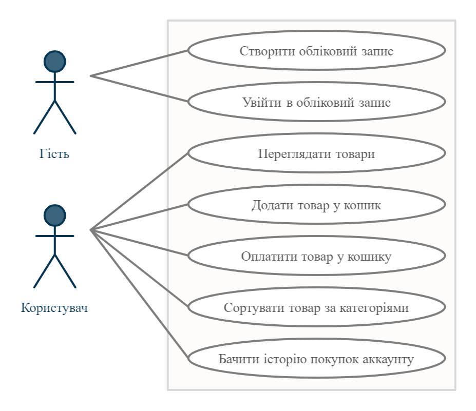

Предметна область: Веб-сайт магазину(маркету-плейсу)
Метою роботи є створення системи, що дозволяє користуватись сайтом оналайн-покупок. Для цього система повинна виконувати такі задачі та мати певні властивості :
- система повинна мати можливість створювати, редагувати, видаляти категорії та інформацію про товар;
- система повинна мати можливість перегляду товарів та послуг;
- мати зручний, інформативний та зрозумілий користувачу інтерфейс.
Функціональні вимоги до системи
Система має відповідати наступним функціональним вимогам:
- для користування системою користувач обов’язково повинен зареєструватися(мати акканут);
- зареєстрований користувач повинен мати можливість переглядати товари та додавати товар у кошик ;
- зареєстрований користувач повинен мати можливість оплачувати товари у кошику;
- зареєстрований користувач повинен мати можливість сортувати товари у пошуку за різним категоріями;
- зареєстрований користувач повинен мати можливість бачити історію покупок у аккаунті.
- Нефункціональні вимоги до системи:
Нефункціональні вимоги:
- система повинна забезпечувати цілісність та безпеку даних користувача;
- система повинна мати базу на сайті або використовуючи додаток ;
- інтерфейс користувача має бути зручним та інтуїтивно-зрозумілим;
- система мати антифрод проти шахрайських атак;
- система повинна бути обов'язково крос-платформенною.
Сценарії
1.1 - Сценарій використання
Назва Вхід в обліковий запис на сайті магазину
Опис Користувач або адміністратор для повноцінного доступу до ресурсу мають увійти або створити та увійти в обліковий запис
Актори Користувач, адміністратор
Частота користування Часто
Тригери Користувач переходить на сторінку сайту
Передумови Вхід до сайту
Постумови Користувач потрапляє на вікно з списком актуальних товарів
Основний розвиток Користувач переходить до списку з переліком товарів
Альтернативні розвитки Адміністратор переходить до вікна редагування товару
Виняткові ситуації –
1.2 - Сценарій використання
Назва Пошук товарів на сайті магазину
Опис Користувач/адміністратор переглядає товари за певними категоріями та ключовими словами
Актори Користувач, адміністратор
Частота користування Часто
Тригери Користувач обирає категорію товарів та вводить ключові слова для їх пошуку
Передумови Вхід на сторінку пошуку
Постумови Користувач потрапляє на товар з певною категорією
Основний розвиток Користувач шукає товари певної категорії та вводить ключові слова для пошуку
Альтернативні розвитки –
Виняткові ситуації Якщо нема співпадінь ключових слів з товарами, товар знайдено не буде
1.3 - Сценарій використання
Назва Покупка товару на сайті магазину
Опис Користувач здійснює покупку на сайти магазину
Актори Користувач
Частота користування Часто
Тригери Користувач переходить до сторінки оформлення замовлення
Передумови Вхід до сторінки корзини покупок
Постумови Користувач потрапляє на вікно з замовленням та інформацієї про неї
Основний розвиток Користувач здійснює покупку
Альтернативні розвитки –
Виняткові ситуації –
Діаграма прецедентів
